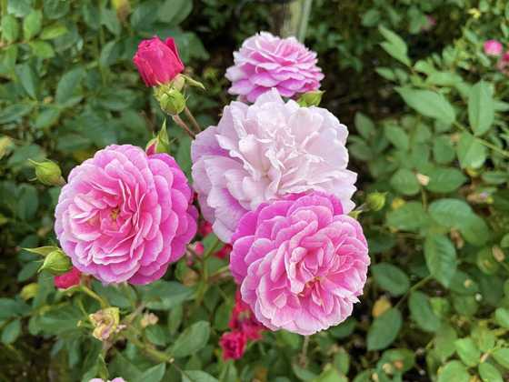
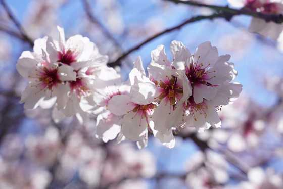
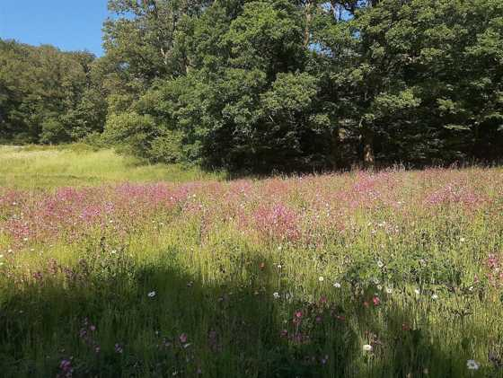
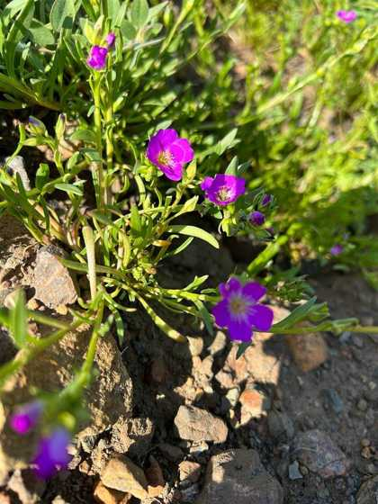
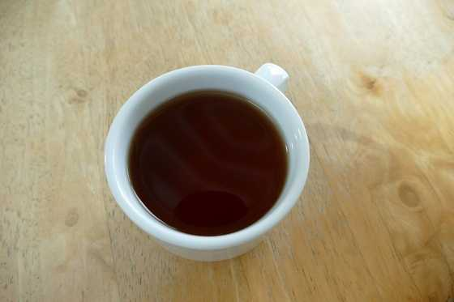

Lily ・ Kuji, Iwate
ユリのように、凛と、やわらかく。
岩手県久慈市のサロン「Lily」。花の名を冠した、ひとときのための場所です。
About
店名に重なる、ユリという花
InstagramのIDには「salon de lis」とあります。「lis」はフランス語でユリを指す言葉で、店名「Lily」(英語でユリ)と重なります。ここでは、この花のイメージを手がかりに、背筋の伸びた、けれど気持ちのほどける空気を表現しました。
確認できているのは、久慈市中央の所在地と、上記のInstagramアカウント名までです。サロンの具体的な内容や店名の由来はお店の公式な発信で確認できていないため、「ユリのイメージ」は制作側のイメージです。
Gallery
花のイメージ
下の写真はフリー素材の花のイメージです。お店の実際の様子ではありません。









Voice
お客さまの声 イメージ例
以下は制作側が作成したイメージ例であり、実在のお客さまの声ではありません。
イメージ例
落ち着いた雰囲気で、ゆっくり過ごせました。また寄りたいです。
イメージ例
丁寧に話を聞いてもらえて、気持ちまで軽くなりました。
イメージ例
駅からも歩きやすく、仕事帰りに立ち寄れるのがうれしいです。